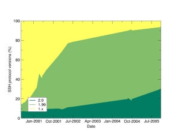
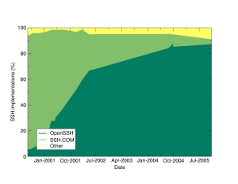

Hoofdpagina
Statistieken
Grafieken
ScanSSH

Grafieken van eerdere metingen
|

|

|
Profilering gebruik SSH
Deze machine maakt deel uit van een project om het gebruik van de versies van de Secure Shell (SSH) servers op het Internet te meten. Dit project lijkt op de Netcraft Web Server Survey. We verzamelen en vergelijken willekeurige hosts op het Internet die de SSH-dienst leveren. Daarna maken we met allemaal een verbinding om de server- en protocolversie te bepalen uit de verbindingsdialoog. De resultaten worden gebruikt om gegevens te publiceren over het gebruik van het SSH-protocol op het Internet. We zijn van plan om onze resultaten op het web te publiceren alsmede op een komende Usenix conferentie.
We zullen niets méér doen dan een vlugge blik werpen op de verbindingsboodschap van uw machine. De scanner zal niet proberen in te loggen op uw machine. Er zullen geen herhaaldelijke verbindingen worden gemaakt naar uw machine aangezien de scanner alleen unieke willekeurige adressen op het Internet genereert.
Er zal geen adres- of domeinspecifieke informatie verstrekt worden aan iemand buiten het project, slechts de conclusies. We zullen geen details publiceren over welke hosts welke versies draaien.
Statistieken van onze huidige scanresultaten kunnen hier gevonden worden. De scans zijn uitgevoerd met de scanssh software.
Deze site Copyright © 2001-2004 OpenBSD.
$OpenBSD: index.html,v 1.6 2005/03/25 06:47:36 saad Exp $